视频生成推理加速
本文素材来自 ChinaSI 2026（中国空间智能大会，2026-08-28~30，武汉）报告 Efficient Long Visual Generation 的 11 张幻灯片照片。报告用十个工作串起了视频生成推理加速的全景——本文以这十个工作为线索，逐个回溯原始论文与代码库核实数字，按演讲顺序展开，所有关键指标均以论文口径为准，幻灯片与论文的出入逐条标注。
视频扩散模型的推理成本来自四个正交维度的叠加：
- 注意力复杂度：3D full attention 处理时空 token，复杂度 \(O(N^2)\)。720P、几秒长的序列 \(N\) 巨大，注意力占推理耗时 70% 以上，生成一段 5 秒视频可达分钟到小时级；
- 去噪步数：标准采样 50 步迭代，每步一次完整前向；
- 模型体积：主流基座 14B 级，单卡消费级 GPU 放不下，CPU offload 又慢两个数量级；
- 系统开销：Python 算子调度、多卡通信、KV cache 随时长线性膨胀。
四个维度对应四个加速层：算子/内核层（量化、稀疏注意力）、训练层（蒸馏、范式重构）、管线层（记忆表示、缓存管理）、系统集成层（并行、编译、流式引擎）。报告的十个工作恰好覆盖全部四层。
flowchart TB Q["视频生成慢在哪"] Q --> A["算子/内核层"] Q --> B["训练层"] Q --> C["管线层"] Q --> D["系统集成层"] A --> A1["FPSAttention：FP8 量化 × 稀疏协同"] B --> B1["BLADE：蒸馏 × 稀疏协同"] B --> B2["NAR：邻域自回归"] C --> C1["LSM：隐空间 3D 记忆"] C --> C2["WorldAttention：分层 KV 缓存"] D --> D1["DAX：算子五件套"] D --> D2["TurboDiffusion：模型 × 系统协同"] D --> D3["Inferix：block-diffusion 流式引擎"] A --> A2["ZipAR / NAR / FlashAR：AR 解码并行化"]
十个工作总览
| 工作 | 层级 | 核心技术 | 训练需求 | 代表加速 | 质量口径 |
|---|---|---|---|---|---|
| FPSAttention | 内核 | FP8 量化 × 稀疏注意力协同 | QAT 微调 | E2E 4.96× | VBench 不降 |
| BLADE | 训练 | 步数蒸馏 × 稀疏注意力协同 | data-free 蒸馏 | E2E 14.10× | VBench 涨 |
| LSM | 管线 | 3D 记忆存成 diffusion latent | 两阶段训练 | E2E 10.57× + 显存 55×↓ | WorldScore 最高 |
| WorldAttention | 系统 | HSA 混合稀疏 + 分层 KV | 三阶段训练 | kernel 14.02× / E2E 2.21× | 超 prior SOTA |
| ZipAR | 推理调度 | 空间局部性行间并行 | 零训练 | 延迟 -82% | CLIP 可无损 |
| NAR | 训练范式 | 邻域自回归（next-neighbor） | 从头训练 | 吞吐 13.8× | FID 更低 |
| FlashAR | 后训练 | 对角线并行 + 垂直头 | 25 epochs + 0.05% 数据 | 22.9×（34B） | GenEval -0.19 |
| DAX | 系统集成 | SP + SageAttn + compile + INT8 + TeaCache | 零训练 | E2E 36.4×（8 卡） | 无量化指标 |
| TurboDiffusion | 模型×系统 | rCM 蒸馏 + SageSLA + W8A8 | rCM 蒸馏 | 199×（单卡） | 视觉对比 |
| Inferix | 推理引擎 | block-diffusion + 分层 KV + 流式 | 零训练（需 BD 模型） | 无数字 | 提出 InterVBench |
一条隐藏主线是团队谱系：Bohan Zhuang 组（ZIP Lab / 浙大 / DAMO）贡献了 FPSAttention、BLADE、WorldAttention、ZipAR、NAR、FlashAR、Inferix 七个工作，朱军组（清华 / 生数 / Berkeley）贡献 TurboDiffusion，Microsoft 贡献 LSM，RiseAI-Sys 贡献 DAX。两个学术生态分别押注「协同设计」与「模型-系统协同」路线，两个工程项目（DAX、Inferix）负责把学术成果组装成可部署的引擎。
FPSAttention：FP8 量化与稀疏注意力协同设计
问题背景
视频 Diffusion 用 3D full attention 处理时空 token，注意力占整个推理耗时的 70% 以上，生成一段 5 秒 720P 视频可达分钟到小时级 #FPSAttention, 2025。两条现成的单点加速路线各有硬伤：FP8 量化（training-free）动态范围优于 INT8，但降精度不经训练适配会引入显著数值偏差，且失真最重的恰恰是高幅值 token；稀疏注意力（training-free，如 STA 滑窗 tile）只顾「跳过」冗余计算。
论文最核心的洞察是两者的内在矛盾：稀疏化负责筛选并保留注意力权重极大的关键元素，量化恰恰在这些高幅值数据上失真最大。简单拼装（naive combination）会导致 VBench Total 掉 21.1%，复杂语义任务近零分——所以必须训练感知地协同设计 #FPSAttention, 2025。
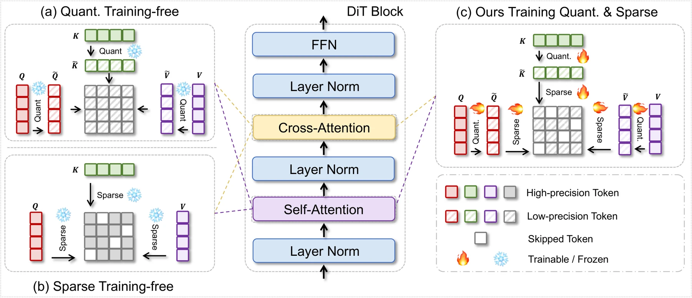
核心方法
统一的 3D tile-wise 粒度：时间/高/宽三轴切成 3D tile，同一 tile 结构同时承载量化与稀疏——量化以 tile 为 scale 单元，稀疏以 tile 为注意力窗口单元。吞吐最优 tile 为 (6,8,8)，精度最优为 (24,32,32)，粒度本身是精度-速度的调节旋钮。稀疏机制基于 STA 的局部性：每个 query tile 只 attend 局部邻域内的 key tile，窗外 tile 完全跳过，不是低精度降级。
噪声调度自适应（denoising step-aware）：early/late 去噪步对粗量化和高稀疏更容忍，mid 步需要细精度低稀疏。策略是 early 步粗 tile + 稀疏窗口、mid 步细 tile + 稠密窗口、late 步取中间配置——把「每步同等计算」改成按噪声水平分配算力。
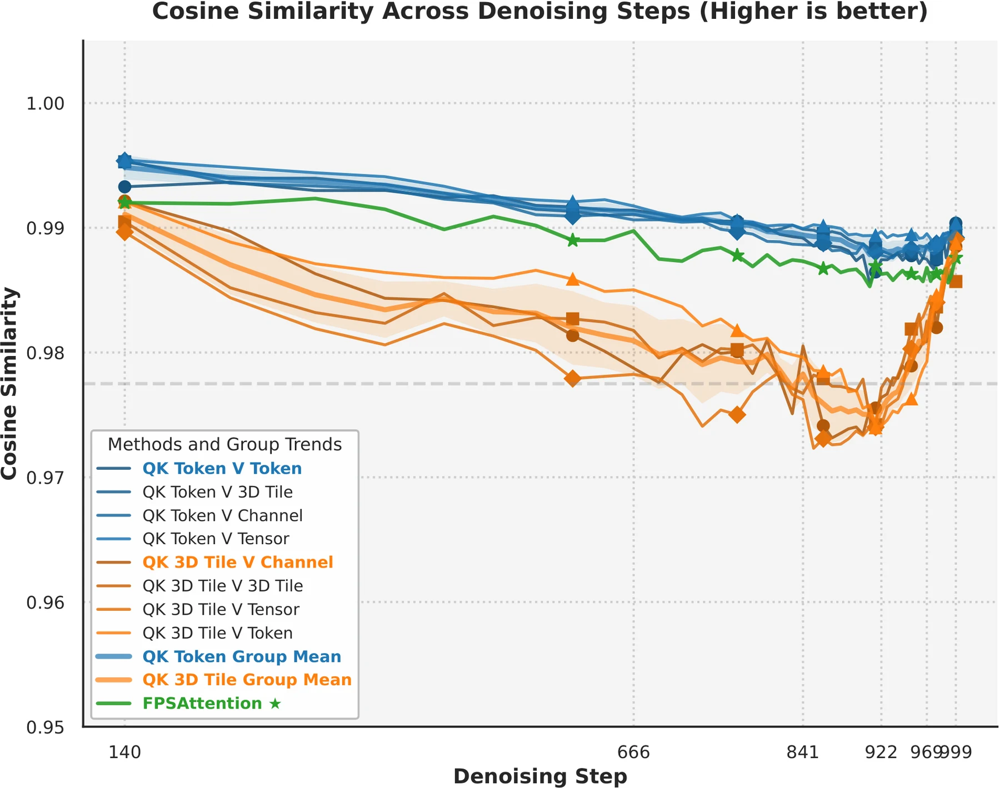
原生 kernel：Triton 实现，融合量化与稀疏到 FlashAttention 风格 pipeline，跑在 Hopper Tensor Cores 上（FP8 GEMM）。训练时对关键 tile 保持高精度（trainable），次要 tile 低精度或跳过，形成梯度可控的混合精度训练。per-tile scaling 因子定义为
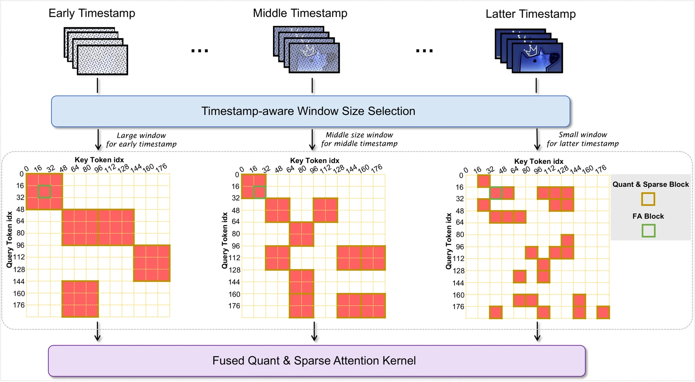
关键指标
论文口径（Wan2.1-14B 720P，H20）#FPSAttention, 2025：
| 配置 | kernel 加速 | E2E 加速 | VBench Total |
|---|---|---|---|
| BF16 基线 | 1× | 1× | 0.8019（1.3B） |
| FP8-only | 1.84× | 1.26× | — |
| STA | 5.15× | 3.60× | 0.7597 |
| SageAttention | — | — | 0.8011 |
| FPSAttention | 7.09× | 4.96× | 0.8160（1.3B）/ 0.816（14B） |
质量不降反微升，分维度看 Imaging Quality 0.7103（vs Sage 0.6699 / STA 0.6626）、Aesthetic 0.624（vs Sage 0.6104）。消融的关键发现：去掉训练感知（naive 组合）VBench 掉 21.1%——协同训练是整个方法成立的前提，不是锦上添花 #FPSAttention, 2025。
指标核对：幻灯片 kernel 7.89×/E2E 4.88× vs 论文 7.09×/4.96×；STA 幻灯片 5.19× vs 论文 5.15×，以论文为准。
训练与工程约束
需要 QAT（量化感知训练）微调，非 post-training、不即插即用。QAT 让模型在训练时就「知道」自己以后会被压到 FP8 并被稀疏跳过，主动学出量化鲁棒的权重：前向插「假量化」（fake quantization），权重/激活模拟压到 FP8 精度再还原，同时保留高精度影子副本记梯度；round 不可导，用 straight-through estimator（STE）让梯度直接穿过量化节点回传；per-tile scaling 因子在训练中持续校准。一句话：PTQ 是「先训完再硬压」，QAT 是「训练时就知道要过苦日子，提前长好」。
QAT 成本：数据为筛选的高质量视频集（480P/16fps/5s）；lr 5e-6；2000 步后 loss 与基线轨迹对齐；14B 用 8×H20 节点（最多 64 节点）训约 7 天 #FPSAttention, 2025。训练是一次性成本，收益是永久的——微调后的权重 + FP8 kernel 成为新推理引擎，之后每个视频都享受 4.96×。对比 training-free 路线（SageAttention E2E 1.26×）：免训练但天花板低；FPSAttention 押注「付一次训练费换速度质量双赢」。
硬件门槛：依赖 Hopper 架构（H100/H20/H200）的硬件 FP8 Tensor Cores。A10 这类 Ampere 卡跑不了完整版——无 FP8 单元，量化部分软件模拟反而更慢；只有稀疏 tile 注意力一半可用（约 STA 级 3.6× kernel）。老卡实操：方法论（tile 统一粒度、噪声自适应调度）可借鉴，量化协同换成 INT8 或只留稀疏。
局限（作者自述）：只在 Wan2.1 架构上验证，未泛化到其他视频 DiT。代码在项目页 fps.ziplab.co，无独立 GitHub 仓库。
为什么质量反而上升（易误读点）
诚实口径：论文的硬 claim 是「质量不降」；14B 上 0.8153→0.816 基本持平，真正的提升在 1.3B（+0.014）。主因是 QAT 的副作用——微调本质是在 curated 高质量数据上额外训了几千步，相当于顺手做了一次 aesthetic 微调，Wan2.1 原基线没在这种数据上精调过；证据是提升集中在 Imaging Quality 和 Aesthetic 这些对训练数据质量最敏感的维度。次因是量化噪声当正则化：训练中的量化噪声 + 稀疏跳过类似 dropout，对生成分布有轻微平滑作用。正确理解：不是「加速还白赚质量」，是「付了训练费，质量至少没丢，小模型略赚」。
BLADE：块稀疏注意力 × 步数蒸馏
问题背景
视频扩散有两条正交加速轴：步数蒸馏（50 步 → 8 步，砍迭代次数）和稀疏注意力（跳过不重要的 attention block，砍单步开销），乘起来本该是十几倍。但朴素组合会失效：蒸馏过程对稀疏性不可知——先蒸馏再插稀疏，student 没在稀疏约束下训过，质量崩；蒸馏后再单独训稀疏注意力又需要极贵的高质量视频数据，违背 data-free 蒸馏的初衷 #BLADE, 2025。BLADE 的答案：把稀疏注意力塞进蒸馏训练循环里联合训练，全程 data-free。
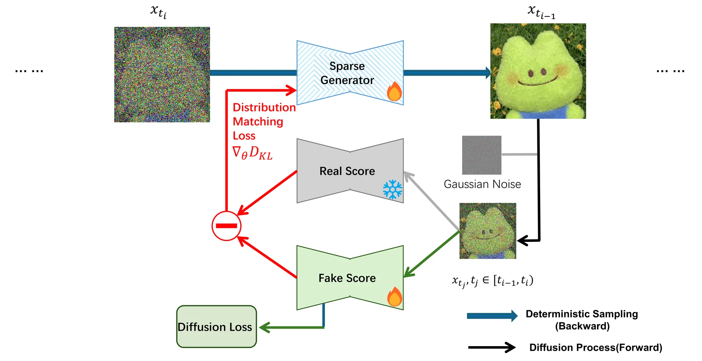
核心方法
ASA（Adaptive Block-Sparse Attention）是动态、内容感知的稀疏掩码：
- Efficient Attention Prober：复用主干 Q/K 投影（不是独立网络），token 先按 Gilbert 曲线重排保留空间局部性、切成 b=128 的 block，每 block 采 k=16 个代表 token 算低分辨率注意力图，MaxPool 聚合成 block 级重要性矩阵 P。开销 \(O(N^2 \cdot (k/b)^2)\)，仅为全注意力的 1/64；
- Threshold-based Mask Generator：P 每行归一化降序排序，累计到阈值（90%/95%）即停，保留最小必需 key block 集合，生成二值 mask；
- 上下文增强：K 与 MeanPool(K) 拼接，原始 K 区用二值 block mask，pooled 区加固定 \(\ln n\) 加性 mask 软引导注意力——稀疏不等于丢全局上下文。
对比 STA（固定局部窗口）：ASA 动态感知内容，同等稀疏度下 PSNR/SSIM 显著更优。
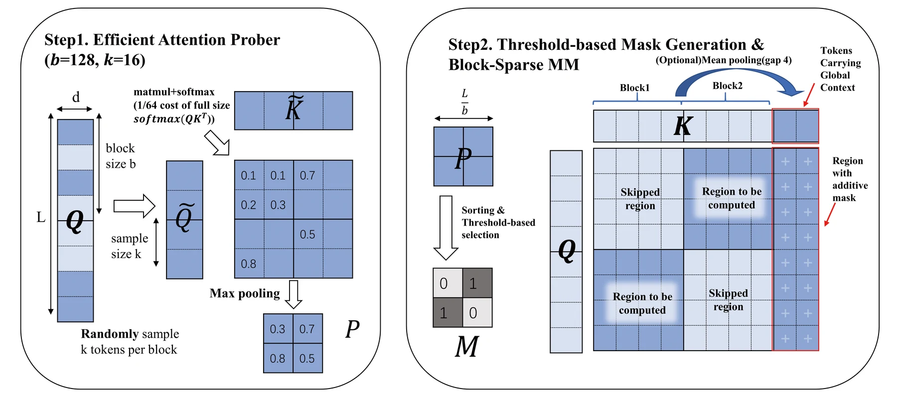
TDM（Trajectory Distribution Matching）蒸馏是 data-free 步数蒸馏框架：teacher 为预训练 50 步模型；student 同架构同初始权重，但 self-attention 换成 ASA。它不要求实例级轨迹对齐（与 DMD/DMD2 的区别），匹配的是 student 中间样本与 teacher 在每步的扩散分布。student 真实 score 不可解析，因此并发训一个 fake score model 近似它——student 输出干净目标、加噪、fake score 学着从噪声还原。稀疏在这里充当正则：student 在动态稀疏约束下生成轨迹，权重更新向 teacher 分布对齐——稀疏不再伤质量反而约束了蒸馏 #BLADE, 2025。
关键指标
VBench-2.0，8 步 student #BLADE, 2025：
| 模型 | 配置 | VBench-2.0 | E2E 加速 |
|---|---|---|---|
| Wan2.1-1.3B | 基线（50 步） | 0.563 | 1× |
| FA2 蒸馏 | 0.580 | 9.37× | |
| STA | 0.528 | 10.53× | |
| BLADE | 0.570 | 14.10× | |
| CogVideoX-5B | 基线 | 0.534 | 1× |
| BLADE | 0.569 | 8.89× |
STA 快但掉分，BLADE 快且涨分。消融的关键发现（CogVideoX-5B）：蒸馏单独 0.539、稀疏单独 0.539、联合 0.569——两个「各 +0.005」的单点手段联合后 +0.035，协同效应远超线性叠加 #BLADE, 2025。
指标核对：幻灯片数字与论文一致（14.10× / 8.89× / 0.569 / 0.570 均对上）。
训练与工程约束
data-free：不用视频数据集，只有 teacher 生成引导信号 + 1 万条文本 prompt；蒸馏 250-500 迭代，8×A800(80GB)；推理 24GB 显存起步，训练需 80GB。与 FPSAttention 同组（ZIP Lab），路线互补：FPSAttention 是量化 × 稀疏协同（需 QAT + 数据，吃 Hopper FP8），BLADE 是蒸馏 × 稀疏协同（data-free，Triton kernel 通用性更好）。
局限（作者自述）：只验证了中等长度序列，分钟级长视频（数十万 token）未验证；Triton kernel 未完全兑现理论加速，CUDA 版是未来工作。代码与 LoRA 权重开源于 ziplab/VIDEO-BLADE（支持 CogVideoX-5B、Wan2.1-1.3B-Diffusers）。
Latent Spatial Memory：隐空间空间记忆
问题背景
视频世界模型（单图 + 相机轨迹 → 长视频）的核心难题是 long-term scene consistency：没有显式空间记忆，再强的生成器也会几何漂移——单帧都漂亮，投影回统一世界坐标就对不上。已有答案维护显式 RGB 点云记忆（Spatia、Voyager、WonderWorld 一系），但生成器工作在 VAE latent space，于是每个 conditioning 步都要走 render-and-encode 往返：点云 z-buffer 栅格化成 RGB 图，再 VAE 重新 encode 成 latent 才能喂给主干 #Latent Spatial Memory, 2026。
三重代价：(1) profiling 显示显式记忆维护是管线主要效率瓶颈（占 60% 以上时间）；(2) 点云随锚定帧近似线性膨胀，长轨迹耗尽显存；(3) RGB 三通道丢失语义/纹理信息，表示本身有损。
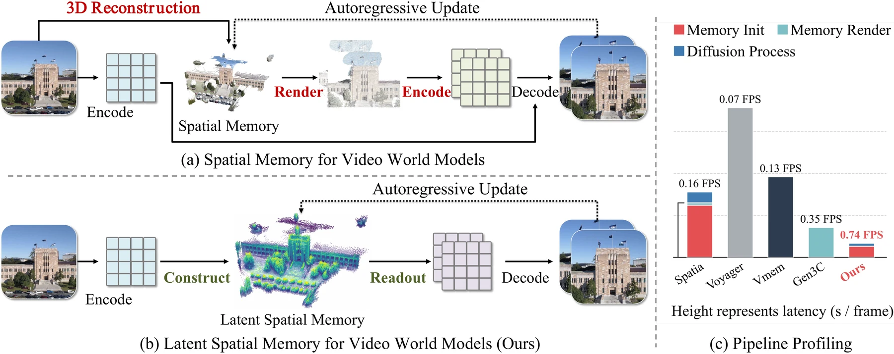
核心方法
核心洞察：既然扩散主干本来就吃 latent，为什么记忆要绕道像素空间？把 3D 记忆直接存成 diffusion latent——一个由 latent 特征向量构成的 3D 点库。
- 写入（初始化 + 每 chunk 更新）：RGB 帧 → VAE encode 成 latent → DepthAnything 3 估深 → 深度引导反投影，把 latent cell 提升到 3D 世界坐标写入记忆。更新时 SAM 3 分割出的动态物体和天空被排除，防止运动实体污染持久记忆；
- 读取：把 3D latent 记忆投影到目标相机位姿的 latent 分辨率网格（z-buffering 定可见性），一次投影直接得到 target-view latent 特征张量 + visibility mask——完全替代 render-encode 往返；
- 注入：readout + mask 拼接喂给 ControlNet-style 侧分支，把记忆特征注入扩散主干。软几何提示而非硬约束（这也是对深度估计噪声鲁棒的原因）。
关键路径安排：像素空间操作只出现在 chunk 级记忆更新（每 chunk 一次），per-step conditioning 循环里只剩单次 latent 分辨率投影；cache 尺寸按 VAE 压缩比的平方缩小：
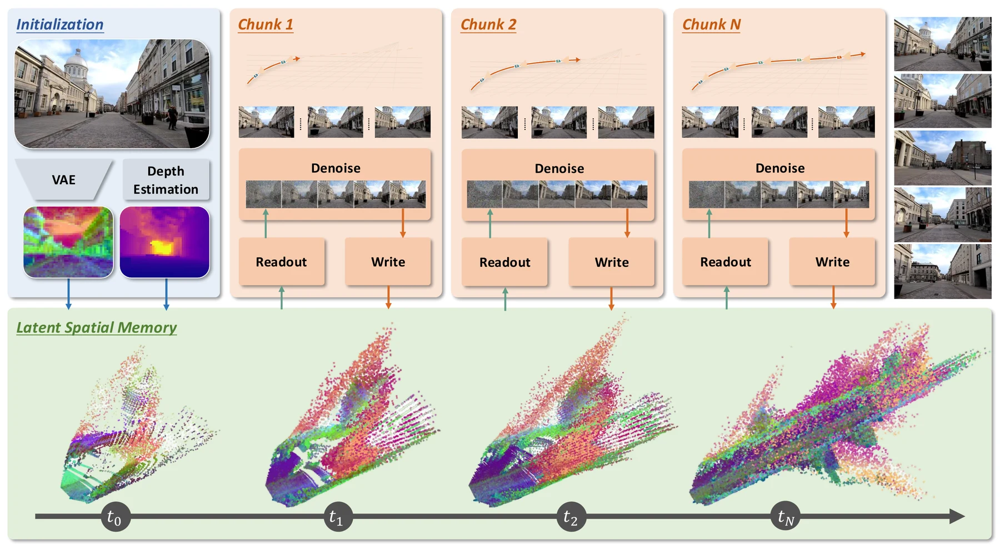
关键指标
配置：Wan2.2-TI2V-5B 基座，每 chunk 9 latent 帧 @44×80 = 33 RGB 帧 @704×1280，UniPC 40 步，效率测于单 H100、5 chunk 自回归 rollout #Latent Spatial Memory, 2026。效率上 E2E 10.57× 加速 + 3D cache 显存 55× 降低（vs RGB-cache 基线）；首 chunk 摊销一次性 setup 后 cache 读取稳定在 0.25s/帧，cache 每 chunk 增长小于 0.5MiB；差距随 rollout 变长持续拉大，RGB 基线在长轨迹上直接耗尽显存。
质量（WorldScore）：Avg 70.36 全场最高（vs Spatia 69.73、Voyager 66.08）；3D Consistency 92.21 / Photo Consistency 93.95 领先——隐空间记忆不只快，几何一致性反而更好。RealEstate10K 上标准 NVS SSIM 0.779 / LPIPS 最佳；闭环协议（相机离开再回到起点）PSNR/SSIM 最佳，是长 horizon 漂移最小的证据。
消融（WorldScore Avg）：full 70.36 → 换回显式 RGB 点云 67.71（-2.65，latent 表示本身有质量优势）→ 去动态物体过滤 61.20（-9.16，最大坑：运动实体留在记忆里会被 splat 回未来帧）→ 像素分辨率反投影 60.85（必须在 latent 分辨率做）→ 单阶段训练 63.18（两阶段必要）。
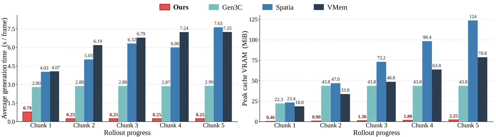
指标核对：幻灯片 10.57×/55× 与论文一致。
训练与工程约束
训练：32×A100、global batch 64、AdamW、bf16、flow-matching 目标；数据为 RealEstate10K 视频（深度 + 位姿标注，动态区域按推理时同样流程剔除）。两阶段训练：stage 1 冻结主干只训 ControlNet 侧分支（从 Wan2.2 对应 block 初始化）；stage 2 解锁 LoRA——单阶段联合训会因早期 conditioning 信号不成熟而劣化收敛。外部依赖 DepthAnything 3（深度）+ SAM 3（动态分割）；鲁棒性消融显示换 MapAnything/UniDepth 深度源仍 competitive，方法不押注特定深度模型 #Latent Spatial Memory, 2026。
任务边界：这是 world model 管线级加速（消掉像素空间往返瓶颈），不是通用 kernel/蒸馏加速；适用单图 + 相机轨迹的 scene generation。开源于 microsoft/LatentSpatialMemory。
WorldAttention：缓存与计算的系统协同设计
问题背景
任务设定：自回归扩散范式的交互式视频世界模型——文本指令可中途切换、低延迟长时长 rollout，面向 embodied AI 与仿真规划。两难困境：滑窗注意力有界复杂度但丢弃历史，牺牲长程交互一致性；全历史 cache 则注意力 \(O(N^2)\) 计算爆炸 + KV cache 随帧数线性增长撑爆显存。系统级观察：KV 重配（re-caching）与数据搬运（data movement）才是主要延迟源——光优化 kernel 不够，cache 层和计算层必须协同设计 #WorldAttention, 2026。
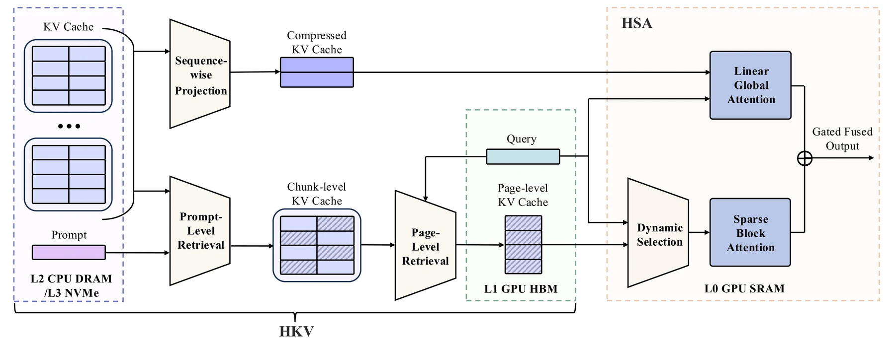
核心方法
HSA（Hybrid Sparse Attention）是双分支 + 门控融合的结构。线性分支做 Linformer 式低秩投影——K/V 沿序列轴投到低秩基（按 segment 增量压缩，压缩 cache 与 token cache 并行维护），提供全窗口的 dense 低秩视野；稀疏分支保持全 token 分辨率，但只在路由选中的 block 内计算。路由是 head-adaptive 的（源码确认）：对每个 head 的 block 注意力分布算 Gini 系数，覆盖阈值
注意力尖锐的 head 保留更多质量、弥散的 head 保留更少——不是固定 Top-K。门控融合 per-token、per-head 地混合两分支输出。
HKV（Hierarchical KV Cache）把历史放到 GPU 外，按需分页取回：完成的 rollout 段为 chunk，chunk 切成固定帧数的 page，每页带 mean-key 索引；两级检索先用 prompt 嵌入余弦相似度筛 chunk，再用页级亲和度 \(\bar{Q} \cdot \bar{K}/\sqrt{d}\) 全局 top-K 选页（跨 chunk 池化后再 top-K，单 chunk 内选会退化）。temporal RoPE 细节（源码确认）：页 key 池化前先去时间旋转（derope），检索装回 GPU 时重旋转到重放槽位（rerope）——位置编码不能带错。多层存储：GPU HBM 在线 cache（容量受页预算封顶，不随视频长度增长）→ CPU DRAM（LRU 有界）→ NVMe（全量备份）。「交互式」的关键：prompt 切换时从历史检索最相关的页装回——新指令进来，旧上下文里挑相关的用。
训练用 per-layer 自蒸馏，损失直接对齐稠密注意力输出：
关键指标
质量：VBench-Long subject consistency 0.9472、InterVBench 0.9668，超 prior SOTA。效率（单 H100）：HSA kernel 14.02× vs FlashAttention-3；加 HKV 后 E2E 2.21×；推理维持 22.0 FPS #WorldAttention, 2026。
指标核对：幻灯片 14.02× / 22.0 FPS / E2E 2.21× 与 README 一致；幻灯片「vs 7.1 FPS」基线数字 README 未披露，标注待核（论文未公开 arXiv）。
训练与工程约束
需要三阶段训练（causal → HSA warmup → HSA tune，8×GPU，逐阶段接续 checkpoint）——非即插即用；基于 Self-Forcing + DMD 蒸馏框架（与本站 数字人系列（七）：实时流式与蒸馏 讲的是同一族技术），基座 Wan（repo 含 1.3B/14B 配置）。迁移到别的模型要改三处：注意力换 HSAAttention（非无损替换，新增可训练参数：线性分支低秩投影矩阵 + 双分支融合门控，路由本身免训练）；HKV 缓存管线是工程量大头（chunk/page 切分、mean-key 索引、两级检索、分层存储、RoPE 换算——纯系统工作但侵入推理框架）；前提是基座为自回归范式，标准全序列视频 DiT 得先自回归化改造。
开源状态要看清：Apache-2.0 核心代码已放（模型/HKV 管线/测试齐全），但推理管线、HSA kernel、可视化、demo 均未放——14.02× 的 kernel 恰恰还没开源。现在动手意味着拿到架构和缓存管理，kernel 要自己写或等放。kernel 还有版本依赖：SM90 上 Triton 3.1 缺该 block-sparse kernel 所需的 shared-memory encoding，会回落到 torch 参考实现。
加速预期要现实：14.02× 只是 kernel 层；E2E 2.21× 的兑现率低于 FPSAttention（kernel 7× / E2E 5×）——因为它的目标是「长视频不爆显存 + 交互实时」，不是极限加速，注意力之外（VAE、MLP、去噪步数）都不受益。收益边界：HKV 检索依赖「页数远大于预算」——短上下文（<30s，几十页）下 HKV 趋近零收益甚至退化为 GPU→CPU→GPU 搬运的纯开销，收益曲线随 rollout 长度增长；三档结论：短上下文有限窗口不值（直接 FlashAttention + 滑窗）、长上下文 + 页预算全吃满、大滑窗等于只买 HSA kernel（HKV 白装）。有限窗口（滑窗式硬截断）= 丢弃历史；HKV 的「有限」是预算封顶 + 相关性检索——有限而不失忆，与滑窗的本质区别。开源于 alibaba-damo-academy/WorldAttention。
ZipAR：空间局部性并行解码
问题背景
AR 视觉生成（GPT 式 next-token prediction：LlamaGen、Emu3-Gen、Lumina-mGPT）能复用 LLM 基建，但采样慢得离谱：每 forward 只出 1 个 token，一张 512² 图 = 1024 步串行；Lumina-mGPT 768 要 2352 步。Raster 顺序的依赖是训练目标强加的，不是视觉内容本身需要的：逐 token 生成时第 i 行首 token 必须等第 i-1 行全部完成——但这两块区域在空间上可能隔了半张图 #ZipAR, 2024。证据（注意力图实证，Lumina-mGPT-7B / LlamaGen-XL）：注意力质量呈斜线带分布，显著权重落在「前一行的同列 token」上（固定间隔 = 图像宽度），即视觉相关性由空间邻近决定，与 raster 生成顺序无关。
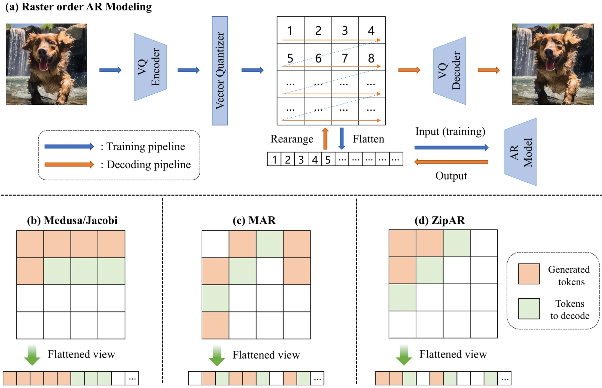
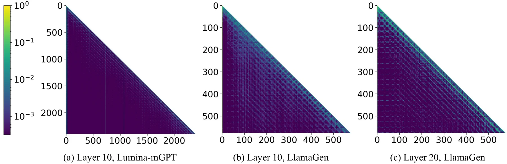
核心方法
行间并行：不再等整行解码完才开始下一行。当第 i 行已生成的 token 数超过窗口 s，就认为第 i+1 行同列 token 的上下文「够用了」，触发下一行并行启动——多个行同时在飞行中，一个 forward 出多个 token。窗口内 = 空间相关；窗口外 = 视为无关。与 Medusa（辅助多头）/ Jacobi（顺序相邻多 token）/ MAR（随机序多 token）的对比：ZipAR 按空间相邻并行，且全部 token 由原模型头产出——不需要任何新参数。
自适应窗口 + 拒绝采样（防质量崩的关键）：固定 s 对所有位置/所有 prompt 都不是最优。做法是从 s_min 起试——用窗口 k 生成的 token 不立即接受；下一步拿到更大窗口 k+1 的预测后，计算两窗口下采样概率之比，类比 speculative decoding 的接受准则：满足则接受并按 NTP 续行；不满足则迭代扩窗。纯推理侧改动：改的是解码调度逻辑，不碰模型权重 #ZipAR, 2024。
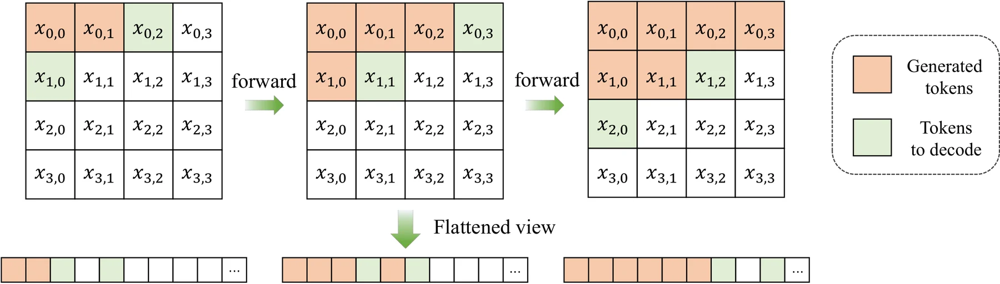
关键指标
A100，batch=1 #ZipAR, 2024：
| 模型 / 任务 | NTP 基线 | ZipAR | 质量 |
|---|---|---|---|
| LlamaGen-XL-512（MS-COCO） | 1024 步 / 33.17s / CLIP 0.287 | ZipAR-3：185 步 / 5.86s | CLIP 0.281 |
| 同上（保守档） | — | ZipAR-15：562 步 / 18.98s | CLIP 0.287（无损） |
| Lumina-mGPT-768 | 2352 步 / 91.70s | ZipAR-11：588 步 / 50.32s | CLIP 0.312 |
| Emu3-Gen | — | 步数最高 -91% | — |
| ImageNet 256 类条件 | NTP FID 3.87 | ZipAR-12：331 步 | FID 3.67 |
vs SJD（此前并行解码 SOTA）：ZipAR-7 用 324 步 + CLIP 0.285 完胜 SJD 的 635 步 + 0.283。分辨率越高赚越多：文本引导模型的加速比高于类条件模型，归因于更大的特征图——空间局部性红利随分辨率放大。
指标核对：幻灯片「1024 → 184 步，33.17s → 5.51s」与论文表 185 步 / 5.86s 有出入（疑为另一配置）；「ZipAR-16 延迟降 47%」对应论文 ZipAR-15 的 42.7%——幻灯片数字偏乐观，以论文为准。
训练与工程约束
零训练、即插即用：无 QAT、无蒸馏、无新参数、无新头，代价全部转移到推理调度代码。适配范围：仅适用 next-token prediction 训练的 raster 顺序 AR 模型（LlamaGen/Emu3/Lumina-mGPT 一系）；BERT 式掩码模型（MaskGIT/Muse/MAR）和 next-scale 模型（VAR）不在射程内。窗口 s 是质量-速度旋钮：激进档掉一点点 CLIP，保守档无损但只赚 45%；自适应窗口在同等步数下 FID 恒优于固定窗口。加速的本质是砍 forward 次数，不砍单次 forward 成本——与 FPSAttention（砍单步 kernel）、BLADE（砍步数 + 单步）正交，理论上可与二者叠加。
局限：只是 image AR 的解码调度；报告把它放进视频加速语境，应理解为「AR 视觉生成通用加速件」。代码开源于 thisisbillhe/zipar。
NAR：邻域自回归建模
问题背景
与 ZipAR 同一个诊断：NTP 的 raster 串行依赖过度指定——但 ZipAR 止步于推理侧绕过，NAR 从训练侧根治。关键动机差异：NTP 模型只学过「raster 下一个 token」的条件分布，ZipAR 式推理侧并行（含 PAR/Jacobi）一次预测多个不同位置 token 时，各位置的条件分布差异很大，单头硬出多 token 质量崩——论文消融显示单头 NAR FID 66.31（灾难级），vs LlamaGen-L 的 3.80 #NAR, 2025。推理侧调度的天花板是训练目标划定的。NAR 的答案：改训练目标本身——next-token → next-neighbor，从「从零开始的 outpainting」视角重建 AR 建模。
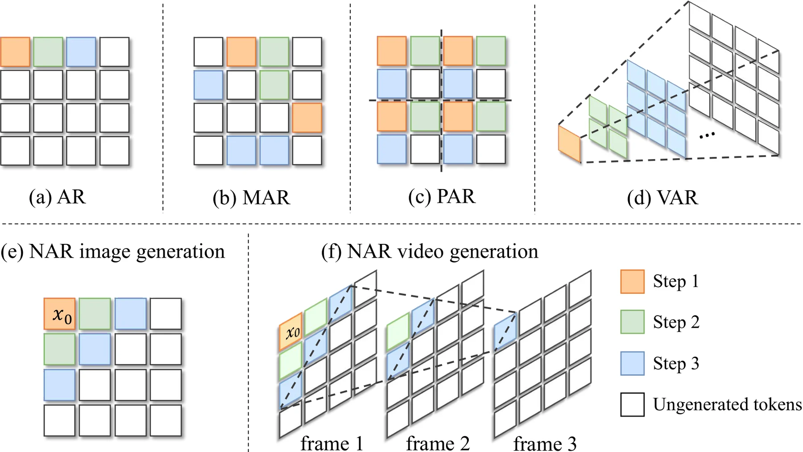
核心方法
邻域自回归：生成 = 从左上角初始 token 起的渐进 outpainting，每步预测已解码区域的全部相邻 token（边界一圈），解码区域像波纹一样从起点向外扩。形式化：第 i 步生成集合 \(S_i = \{x_i \mid D(x_i, x_0) = i\}\)，D 为曼哈顿距离。步数公式：
维度导向解码头（dimension-oriented heads）是方法成立的核心。问题：多个等距 token 分布在不同维度上，条件分布各不相同，一个头建模不过来。方案：图像是 2 维 → 水平头（同行下一个 token）+ 垂直头（下一行同列 token）两个额外头，每个 = 1 个 Transformer block + FC 输出层，拼在主干后面；视频是 3 维 → 时间/行/列三头。解耦让每个头只学一个维度的条件分布。
混合 logits 采样：从第 3 步起两个头对同一位置各有预测（重叠区），把多头的 logits 混合采样而非取单头——类模型集成。消融：单水平头 FID 75.91 / 单垂直头 25.73 / 混合 3.06——混合是数量级差异，不是锦上添花。邻近感知注意力掩码：训练时跨步 token 间用因果掩码（远 token 只依赖近 token，保自回归性）；同一步内的 token 之间用双向注意力（并行生成的 token 互相看见，保一致性）#NAR, 2025。
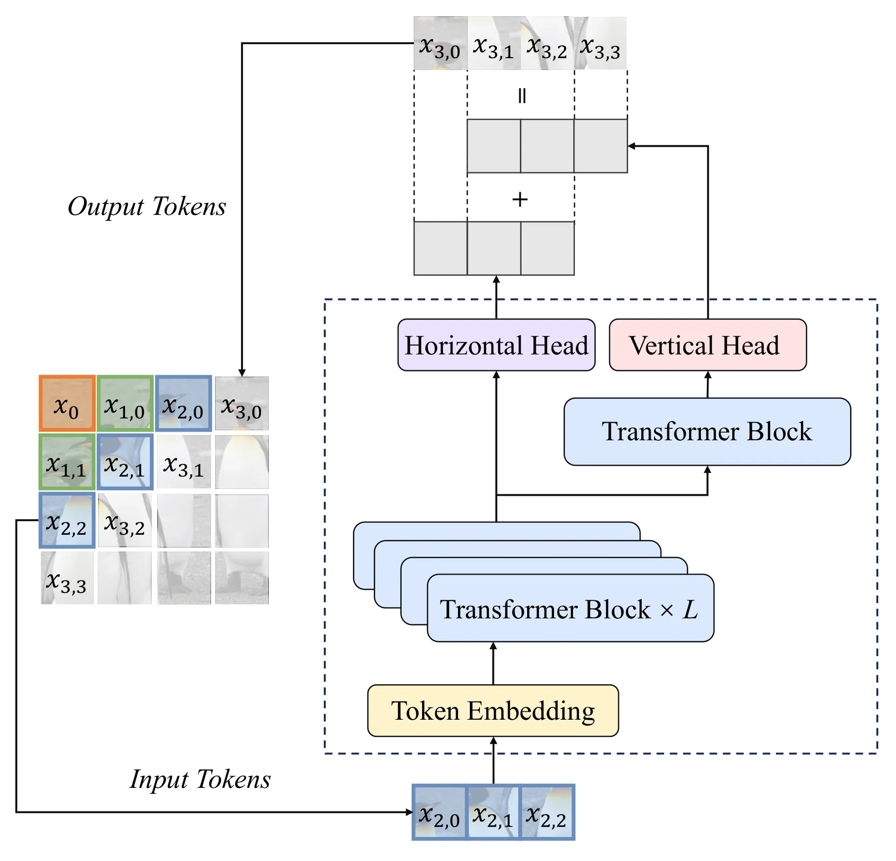
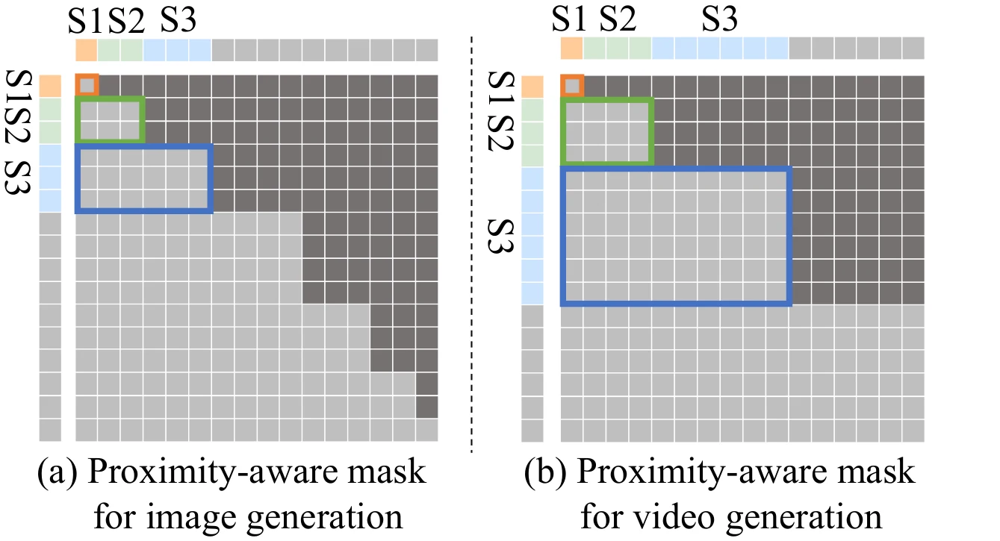
关键指标
A100 上 #NAR, 2025：ImageNet 256，NAR-L 372M 用 31 步达到 FID 3.06——低于 LlamaGen-XXL 1.4B 的 3.09，步数少 87.8%，吞吐 13.8×（195.4 vs 14.1 img/s）；NAR-XXL 1.46B FID 2.58。vs VAR：NAR-M 290M FID 3.27 < VAR-d16 310M 的 3.30，吞吐 1.92×，且不需要 VAR 的多尺度 tokenizer。视频 UCF-101：NAR-L 34 步 / 1.09s，FVD 96.2，比 LARP-L-Long（1280 步 / 44.0s）延迟降 97.5% 且 FVD 更好；NAR-LP 694M FVD 71.1 逼近 MAGVIT-v2 的 58。文生图 GenEval：NAR-XL 用 6M 对（LlamaGen 的 1/10）总体分 0.43 vs 0.32，吞吐 4.4×。
指标核对：幻灯片「复杂度 O(n)→O(√n)」对应论文步数公式 n²→2n−1（√ 量级），成立。
训练与工程约束
必须重训（与 ZipAR 的本质分野）：改了训练目标 + 加了维度头，不能套在现成 NTP 权重上——好处是训练管线/tokenizer 与 LlamaGen 完全兼容，仅需改架构和注意力掩码。训练开销低于 VAR：VAR 需专门的多尺度 tokenizer + 多尺度拼接长序列；NAR 用现成单尺度 tokenizer。视频三头即插即用（时间/行/列），不需为视频改范式——报告把它列入视频加速线的合理性所在。与 ZipAR 的关系（同一班底的两面）：ZipAR 是推理侧调度（training-free 但受训练目标制约），NAR 是训练侧重建（付训练费但把邻域依赖变成原生结构，31 步 vs ZipAR 最优 185 步）——ZipAR 是权宜，NAR 是根治。代码开源于 ThisisBillhe/NAR。
FlashAR：AR 图像生成后训练加速
问题背景
前两条路线各有硬伤：改范式派（NAR/VAR/PAR）要从头预训练，无法复用海量现成 raster-AR 权重；推理侧派（ZipAR/投机解码）受训练目标制约，加速天花板低。Emu3.5 的 Block Diffusion 后训练路线又改变了预测目标（离散扩散适配），训练-推理有 gap 且伤细粒度结构一致性 #FlashAR, 2026。开放问题（论文原文）：能否把预训练 raster-AR 模型改造成高度并行生成器，完整继承其生成先验，同时后训练开销最小？
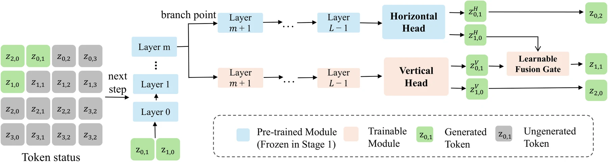
核心方法
双向 next-token（对角线并行）：保留原 AR 头作水平头（行内预测），新增轻量垂直头（列向预测）——沿反对角线并行解码，串行步数 \(O(HW) \to O(H+W)\)，512² 图 1024 步 → 63 步。核心洞察：对预训练模型改动越少，先验保留越完整——水平头原封不动是关键。
中间层分支（intermediate branching）是最反直觉的设计：垂直头不从最后一层分出。Linear probe 实验发现顶层表征已特化到水平 raster 目标、丢失跨轴语义，中间层特征对垂直预测更有利。主干共享前 m 层，水平/垂直两路从第 m 层分岔并行走完剩余层（不加深关键路径）。可学习融合门：水平/垂直预测的相对重要性随位置变化，固定平均不够（消融：平均 FID 4.36 → 门控 4.12），门逐位置动态混合两路 logits。两阶段后训练：stage 1 从预训练模型适配初始化垂直头；stage 2 垂直头 + 主干联合精调。硬件感知推理管线：FlexAttention 动态编译稀疏 2D 邻近掩码（不物化全注意力矩阵）+ 批量 KV-cache 更新 + CFG 条件/无条件前向批处理——把理论并行度翻译成实际 wall-clock。
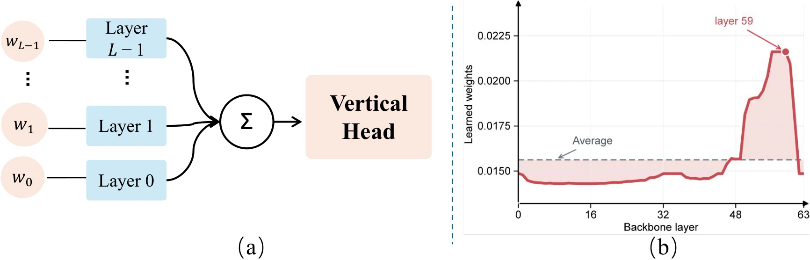
关键指标
单 H20-96G，batch=1 #FlashAR, 2026：Emu3.5-Image 34B 512² 从 130.10s → 5.68s（22.9×），1024 步 → 63 步；GenEval 总分仅 -0.19（80.48→80.29），Colors（+1.59）/ Position（+7.00）反超 AR 基线；同设置的 BlockDiffusion 大幅退化。后训练量：LlamaGen 上 25 epochs（BlockDiffusion 需 75k 步且更差：FID 3.16 vs 4.55）；Emu3.5 仅 80K 文图对（原训练数据 0.05%）+ 50K 步。LlamaGen ImageNet 256：FlashAR-L FID 3.16、IS 289.0——IS 超过从头训的 NAR-L（263.9），吞吐 224.7 img/s（FlexAttention 红利）。收敛效率：5 epochs 就达 FID 3.98，已优于 BlockDiffusion 25 epochs 的 4.55。消融：垂直分支单独引入 FID 4.16 vs 基线 4.36（中间层分支有效）；分支深度 m 过深限制垂直路容量、过浅减少共享，中间最优。
指标核对：幻灯片「22.9×/130.10s→5.68s/1% 数据」与论文一致（1% 是早期版本口径，正式版 0.05%——更激进）；「跨规模吞吐 4.8×」对应 L 尺度（224.7/47.1）；「U0 机器人近 83×」论文正文未含（疑为报告人补充的 Xiaomi U0 应用案例），标注待核。
训练与工程约束
定位在 NAR 和 ZipAR 之间：比 NAR 便宜得多（NAR 从头训 300 epochs vs FlashAR 后训练 25 epochs + 0.05% 数据），比 ZipAR 强得多（63 步 vs 185 步 + 质量更好）——「花小钱改造成品」的甜点位。适配前提：基座必须是 raster-scan NTP 模型；垂直头 + 融合门是新增可训练参数，分支深度 m 是每模型要调的超参。34B 级验证的意义：证明了该路线在大模型上后训练可行——对「手握大预训练模型、没资源重训」的团队是直接可用的路径。工程依赖 PyTorch FlexAttention；批量 KV-cache 更新和 CFG 批处理是拿到实测加速的必要工程，非可选。项目页 lxazjk.github.io/FlashAR。
DAX：VideoGen 推理基础设施
问题背景
视频扩散推理慢是多因素叠加：单卡放不下 14B 要多卡、注意力算得慢、线性层占大头、50 步去噪有冗余、Python 算子调度开销大——单点优化各自为战时收益互相稀释。DAX（Diffusion Accelerated eXecution）定位为训练无关的纯推理加速引擎，把已验证的单点技术组合成管线并解决组合时的工程交互（量化算子与通信算子的融合、并行下的通信隐藏）#DAX, 2025。与前面工作的分野：FPSAttention/BLADE 是论文（新技术 + 协同设计），DAX 是工程（已验证技术的系统级组合）——加速栈的「集成商」。
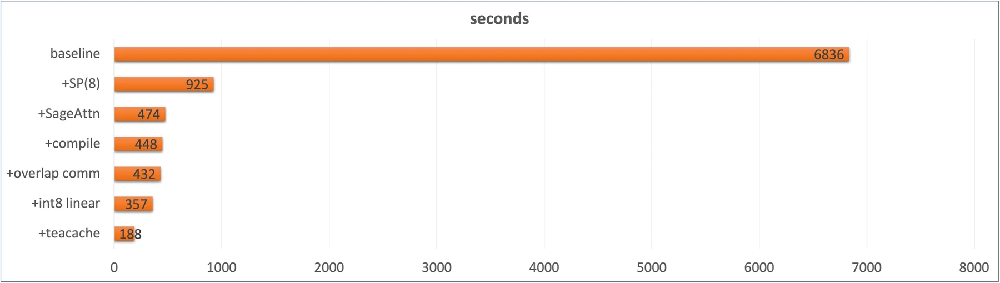
核心方法（五件套，均 training-free）
- 序列并行 SP(8)：8 卡切序列维（Ulysses 式 all-to-all），6836s → 925s——单点最大头（7.4×）；
- SageAttention2：注意力 INT8 量化 kernel（与本站 LLM 量化入门 讲的低比特注意力是同族技术），925 → 474s；
- torch.compile：融合小算子消除 Python/kernel 启动开销，474 → 448s；
- 通信-计算重叠：QKV 投影与 all-to-all 通信流/计算流重叠 + 输出投影沿序列维切块边算边通信，E2E +4~5%；
- INT8 线性层：激活动态 per-token + 权重静态 per-channel，qconfig_dict 按层定制（condition_embedder / proj_out 跳过量化保精度），+20% 性能；
- TeaCache：跳过「不重要」的去噪步（残差缓存插值），448 → 188s——收尾最大单项。
关键指标
Wan2.1-T2V-14B 720p 5s 50 步，8×H20 #DAX, 2025。消融阶梯：baseline 6836s → SP(8) 925 → +SageAttn 474 → +compile 448 → +overlap 432 → +int8 357 → +TeaCache 188s（36.4×）。支持矩阵：Wan2.1 T2V + I2V（2025.09.05 加入）；ATTENTION_BACKEND 可选 FLASH_ATTN/SDPA，官方推荐 SageAttention。
指标核对：幻灯片「66.36s → 1.84s（36×）」与仓库 benchmark 图有出入（图为 6836s→188s，36× 吻合；但「单卡」说法与 SP(8) 矛盾——6836s 是无并行基线、188s 是 8 卡结果，66.36s/1.84s 疑为报告人对不同配置的换算口径）。36× 总加速比与仓库一致。
训练与工程约束
零训练：五件套全部 training-free，即插即用。量化的精度-性能权衡有实测背书：per-token INT8 激活量化后生成 latent 余弦相似度 0.9759 / MSE 0.047，显著优于 per-token FP8（0.86/0.28）——INT8 动态量化比 FP8 更准（动态 per-token 校准范围小），这是反直觉但被表格证实的结论。组合的艺术在 torch.compile：文档明说 compile 是「达到预期性能的关键」——量化 kernel 与通信算子的融合要靠它兑现，不是可选项。
8 卡门槛：36× 数字以 SP(8) 为前提；单卡只能吃到 SageAttn + INT8 + TeaCache + compile 的部分（约 2-3× 量级）。仓库 2025.09 后无更新、只适配 Wan2.1 系——作为参考实现/组件库价值大于直接生产部署。
适用边界——流式数字人视频生成：DAX 是「单次生成调用内」的加速，能压低每个去噪 chunk 的成本（且已支持 I2V），但流式的三个核心问题它都不管。(1) 范式：Wan2.1 DiT 是全片段去噪非因果架构，真流式需要 block-causal Transformer（Wan-Streamer 类）或 Self-Forcing 式滚动生成，跨 chunk 一致性/历史状态传递 DAX 不涉及；(2) 延迟预算：188s 生成 5s（8 卡）≈ 37× 慢于实时，短 chunk 下注意力开销不线性缩短，TeaCache 缓存不跨 chunk 复用；(3) 正确定位：DAX（算子）+ 步数蒸馏（DMD/Self-Forcing 类）+ chunk 调度三者正交可叠加——DAX 明确「无步数蒸馏」，单靠它到不了实时，但作为蒸馏后模型的推理引擎仍是最实用一块 #DAX, 2025。
TurboDiffusion：模型与系统协同设计
问题背景
与 DAX 的分野：DAX 是纯工程（training-free），上限受「50 步去噪」锁死；TurboDiffusion 走模型与系统协同设计——把训练侧手段（蒸馏、稀疏注意力微调）与系统侧手段（量化、算子融合）叠加，突破 training-free 天花板 #TurboDiffusion, 2025。核心矛盾：单卡消费级 GPU（RTX 5090，32GB）跑 Wan2.1-14B——原始实现必须 CPU offload（4767s），去掉直接 OOM。作者阵容（Jintao Zhang、Kaiwen Zheng、Ion Stoica、Joseph E. Gonzalez、Jianfei Chen、Jun Zhu 等）是 SageAttention/rCM 原班人马——注意，非前六个工作的 Bohan Zhuang 组。
核心方法（四件套 + 算子融合）
- SageAttention2++：低比特量化注意力 kernel（SageAttention 系列最新变体）；
- SLA → SageSLA：Sparse-Linear Attention（可训练稀疏注意力，Top-K ratio 0.1 = 90% 稀疏度），SageSLA 是其在 SageAttention 之上的 CUDA 实现——稀疏计算与低比特 Tensor Core 正交，收益可叠加；
- rCM 步数蒸馏：score-regularized 连续时间一致性蒸馏，采样 100 步 → 3-4 步；通过模型权重合并自然继承注意力层加速——消融中最大单项（33.3×）；
- W8A8 量化：INT8 block-wise（块 128×128）量化权重 + 激活，模型体积减半，线性层走 INT8 Tensor Core——同时解决 14B 单卡放不下的问题（免 CPU offload）；
- 算子融合：LayerNorm/RMSNorm 用 Triton/CUDA 重写。
训练流程：(1) 全注意力替换为 SLA 后微调适配稀疏性；并行地用 rCM 蒸馏出少步学生模型；(2) 两者参数更新合并进单一模型（真实或合成数据均可）。
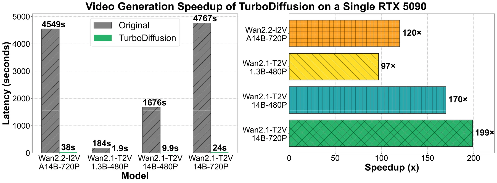
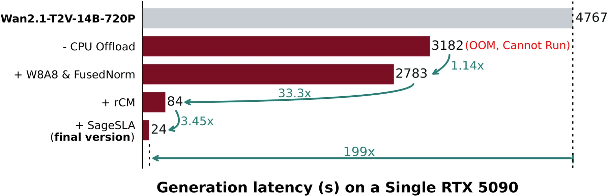
关键指标
单卡 RTX 5090，5s 视频，3-4 步；延迟不含文本编码与 VAE 解码 #TurboDiffusion, 2025：
| 消融阶梯（14B-720P） | 延迟 | 阶段加速 |
|---|---|---|
| original（含 CPU offload） | 4767s | — |
| 去掉 offload | 3182s | — |
| + W8A8 & FusedNorm | 2783s | 1.14× |
| + rCM | 84s | 33.3× |
| + SageSLA | 24s | 3.45×（总 199×） |
四模型加速比：Wan2.1-T2V-14B-720P 4767→24s（199×）；14B-480P 1676→9.9s（170×）；1.3B-480P 184→1.9s（97×）；Wan2.2-I2V-A14B-720P 4549→38s（120×，含高低噪声两模型切换开销，理论可达 199×）。对比 FastVideo（同为加速框架，3 步 + 0.8 稀疏度）：14B-720P 72.6s vs 24s（3× 优势）；1.3B 5.3s vs 1.9s。
指标核对：幻灯片数字与论文完全一致——4767s→24s（199×）、rCM 33.3×、SageSLA 3.45× 均在论文原图中逐一对上；「100-200×」为论文标题口径（各模型区间），无出入。十个工作中幻灯片口径与论文核对最干净的一个。
训练与工程约束
不是 training-free：SLA 微调 + rCM 蒸馏需要训练管线（但训练代码完整开源）——蒸馏是「每模型一次」的成本，换新基座/自训数字人模型需重跑。质量证据全是视觉对比（帧序列 GIF），论文无 VBench/FVD 类量化指标——「maintaining video quality」是定性声明，采用前需自测。超参：Top-K ratio 0.1（推荐区间 [0.1, 0.15]），步数 3（推荐 4 以稳定质量）。环境门槛：torch >= 2.7.0（2.8.0 防 OOM）、需另装 SpargeAttn；RTX 4090/H100 也可用但加速倍数小于 5090（低比特 Tensor Core 利用率不同）。开源完整度高：4 个 TurboWan checkpoint（含 I2V）+ 训练代码 + 推理代码 + PyPI 包，见 thu-ml/TurboDiffusion。
对数字人管线的适用性（高，且与 DAX 互补）：rCM 蒸馏正是流式管线需要的「少步采样」技术（与 DMD/Self-Forcing 同类，是 DAX 明确缺失的一环）；TurboWan2.2-I2V-A14B checkpoint 可直接用于 I2V 数字人生成；W8A8 + SageSLA 可移植到任意 DiT。单卡 24s 生成 5s 视频已接近 chunk 式流式的延迟预算 #TurboDiffusion, 2025。
Inferix：AR-Diffusion 世界模型推理引擎
问题背景
定位叙事（论文原话类比）：LLM 时代催生 vLLM/SGLang，视觉扩散时代催生 xDiT/FastVideo，世界模型时代需要自己的推理引擎——Inferix 即为此而建 #Inferix, 2025。服务对象是半自回归（block-diffusion）世界模型：块内扩散并行 + 块间自回归 + 重新引入 LLM 式 KV Cache——恰好补上 DAX 小节里指出的流式缺口（chunk 调度 + 跨块状态传递）。两大挑战：(1) 存储——历史块的 KV Cache 是主要瓶颈（防漂移/遗忘需保留上下文，但显存吃不消）；(2) 计算——Wan2.1 14B 单卡 H20 生成 5s 视频约 6,800s（与 DAX 的 6836s 基线同源），长上下文下更重。
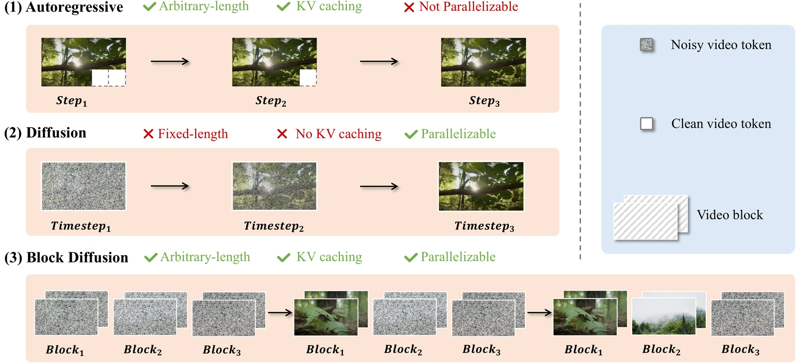
核心方法（Block-DiT pipeline 五组件）
- 并行策略：Ulysses 式序列并行（按 attention head 切分多卡）+ Ring Attention（环形拓扑分布注意力，按注意力机制选传 Q 或传 KV）——依模型架构/网络拓扑/通信开销自适应选择；
- 块级 KV 管理：统一 KV 管理接口；range-based 分块访问 + index-based 选择性取回两种取数模式（为未来「滑窗 + 选择性全局上下文」模型预留扩展性）；支持 MLA latent store 与主存 offload（分层：GPU→主存）；
- DAX 量化：直接集成 DAX 的 INT8/FP8 线性层量化（论文引用 DAX 并复用——DAX 小节的工程组件在此被系统级吸收）；
- 流式输出：RTMP + WebRTC 双协议；连续 prompt（不同 chunk 可不同 prompt）；切换 prompt 时清空 cross-attention cache 消除旧 prompt 影响；暂停/恢复/停止；
- 内置 Profiling：扩散模型性能剖析。
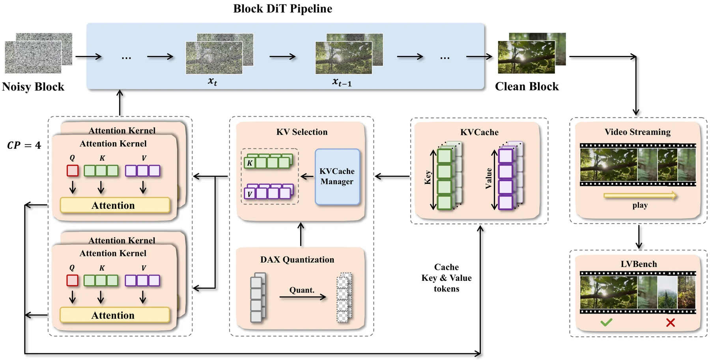
关键指标
论文无任何加速倍数/吞吐数字——纯系统定位文（连 InterVBench 都只给 benchmark 构造，无跑分结果）。幻灯片与 README 亦无量化数字，口径一致：「interactively, in real time — even on consumer GPUs」是定性声明。支持模型：Self Forcing、CausVid（建于 Wan2.1 之上）+ MAGI-1（从头训练）+ Wan-Base 1.3B（供扩展）。
InterVBench：1,000 条 50s+ 长视频（DanceTrack/GOT-10k/HD-VILA-100M/ShareGPT4V），GPT-4o 每 2-3s 生成 caption + 三阶段人工校验；提出 VDE（Video Drift Error）漂移指标五维度（Clarity/Motion/Aesthetic/Background/Subject）+ VBench 五维度。
指标核对：幻灯片特性列表（分层 KV / INT8-FP8 / CP-TP 并行 / 连续 prompt / RTMP-WebRTC / 16GB 消费级 GPU）与论文 + README 全部对上；两处口径差异——「CP/TP 并行」vs 论文「Ulysses SP + Ring Attention」（Ring Attention 本质即 CP，实质一致）；「16GB 消费级 GPU」仅见于 README/幻灯片，论文无此数据（README-only 声明，待自测）。
训练与工程约束
引擎不是模型：零训练，但只服务于 block-diffusion 范式的模型——传统全注意力 DiT（原版 Wan2.1）不受益，需先有半自回归化的模型（Self Forcing/CausVid 蒸馏产物或 MAGI-1）。真正的杀手级场景：交互式世界模拟/数字人直播——实时 prompt 切换 + RTMP/WebRTC 推流 + pause/resume，这是十个工作中唯一原生面向交互流式的。仓库活跃度：2025.10-11 密集更新后放缓；star 少（135）但论文/代码/文档完整，见 alibaba-damo-academy/Inferix。
LLM 推理技术迁移清单（论文 Challenges 节明示）：PageAttention、offload（FlexGen/InfiniGen）、KV 压缩（KIVI/SnapKV）待引入——当前版本只做了 offload，PageAttention/KV 压缩是路线图。对数字人管线的适用性（最高，与 DAX 互补拼图完成）：DAX（算子加速）+ TurboDiffusion（rCM 少步蒸馏）+ Inferix（block-diffusion 范式 + 流式引擎）三者正好构成完整技术栈——Inferix 支持的 CausVid/Self Forcing 正是数字人滚动生成的主流路线（参考 数字人系列（七） 与 关于数字人）；16GB 消费级 GPU 跑交互式生成若属实，直接改变数字人直播的部署成本结构 #Inferix, 2025。
协同设计是唯一的免费午餐
单点技术简单拼装会互相抵消甚至翻车：FP8 量化与稀疏注意力 naive 组合，VBench 掉 21.1%（FPSAttention 消融）；先蒸馏再插稀疏同样质量崩（BLADE 的出发点）。反过来，把两个手段放进同一个训练循环联合优化，得到的不是 1+1=2，而是 1+1>2：BLADE 消融中蒸馏单独 +0.005、稀疏单独 +0.005、联合 +0.035。加速手段之间的交互必须显式设计，不能事后拼装——这是贯穿 FPSAttention、BLADE、TurboDiffusion、WorldAttention 四篇的共同结论。
训练费与即插即用的光谱
十个工作按「侵入性」排成一条光谱：ZipAR / DAX（零训练，只改推理代码）→ FlashAR（后训练 25 epochs、0.05% 数据）→ BLADE（data-free 蒸馏 250-500 迭代）→ FPSAttention（QAT，最多 64 节点 × 7 天）→ NAR（从头训练 300 epochs）。规律清晰：付的训练费越多，加速天花板越高、质量越有保障；零训练路线的天花板由训练目标划定——NAR 论文用「单头并行 FID 66.31」证明了推理侧调度的极限。对工程团队的启示：先问自己能付多少训练费，再选路线。
幻灯片与论文的口径差异
十个工作中，TurboDiffusion 幻灯片与论文逐字一致；BLADE、LSM、NAR、Inferix 基本一致；FPSAttention、ZipAR、DAX 的幻灯片数字与论文/仓库有出入（均已逐条标注）。演讲幻灯片常换算口径或引用早期版本数字——引用具体数字前务必回原论文核对。两个「README-only」声明也值得警惕：Inferix 的「16GB 消费级 GPU」与 WorldAttention 的部分基线 FPS，论文中均无对应数据。
数字人管线的落地排序
对数字人视频生成场景，十个工作的实用性排序：
- Inferix + TurboDiffusion + DAX：三者正交可叠加，恰好构成流式技术栈——Inferix 提供 block-diffusion 流式引擎与 KV 管理，TurboDiffusion 的 rCM 提供少步采样，DAX 的算子加速已被 Inferix 系统级吸收。Inferix 支持的 CausVid / Self Forcing 正是数字人滚动生成的主流路线；
- LSM：隐空间记忆思路对跨 chunk 一致性有参考价值，但绑定单图 + 相机轨迹的 scene generation 任务；
- FPSAttention / BLADE：高质量视频生成的通用加速件，但前者吃 Hopper FP8 硬件、未在 14B 之外验证；
- ZipAR / NAR / FlashAR：AR 视觉生成路线，与扩散管线正交，仅在自训 AR 模型时有参考价值。
真正改变部署成本结构的悬念只有一个：Inferix 声称的「16GB 消费级 GPU 实时交互生成」若自测属实，数字人直播的门槛从 8×H20 直接掉到一张消费卡。这比任何单篇论文的加速倍数都更值得工程团队亲手验证。
一页速查
- 内核级：FPSAttention——FP8 × 稀疏 tile 协同，E2E 4.96×，VBench 不降（需 QAT + Hopper）
- 训练级：BLADE——蒸馏 × 稀疏协同，E2E 14.10×，VBench 涨（data-free）
- 管线级：LSM——latent 3D 记忆，E2E 10.57× + 显存 55×↓（世界模型专用）
- 系统级：WorldAttention——HSA + 分层 KV，22 FPS 交互式长 rollout
- AR 线：ZipAR 零训练 -82% 延迟 / NAR 从头训 31 步 / FlashAR 后训练 22.9×
- 引擎线：DAX 36.4×（8 卡）/ TurboDiffusion 199×（单卡）/ Inferix 补齐流式缺口
- 组合结论：DAX + rCM 蒸馏 + Inferix = 流式数字人完整技术栈
参考来源
- Zhang, Q. et al. (2025). FPSAttention: Training-Aware FP8 and Sparsity Co-Design for Fast Video Diffusion. NeurIPS 2025 Spotlight. arXiv:2506.04648 · 项目页
- BLADE: Block-Sparse Attention Meets Step Distillation for Efficient Video Generation. ICLR 2026. arXiv:2508.10774 · GitHub
- Latent Spatial Memory for Video World Models. Microsoft. arXiv:2606.09828 · GitHub
- WorldAttention: An Efficient Attention Architecture for Interactive Video World Models. DAMO Academy / 浙大 / HKUST. GitHub（arXiv 未挂）
- He, Y. et al. (2024). ZipAR: Parallel Autoregressive Image Generation through Spatial Locality. ICML 2025. arXiv:2412.04062 · GitHub
- He, Y. et al. (2025). Neighboring Autoregressive Modeling for Efficient Visual Generation. ICCV 2025. arXiv:2503.10696 · GitHub
- Zhou, J. et al. (2026). FlashAR: Efficient Post-Training Acceleration for Autoregressive Image Generation. arXiv:2605.09430 · 项目页
- RiseAI-Sys (2025). DAX: Diffusion Accelerated eXecution. GitHub（无论文）
- Zhang, J. et al. (2025). TurboDiffusion: Accelerating Video Diffusion Models by 100–200 Times. arXiv:2512.16093 · GitHub
- Inferix Team (2025). Inferix: A Block-Diffusion based Next-Generation Inference Engine for World Simulation. arXiv:2511.20714 · GitHub
- ChinaSI 2026（中国空间智能大会）报告 Efficient Long Visual Generation，2026-08-28~30，武汉。幻灯片照片 11 张。